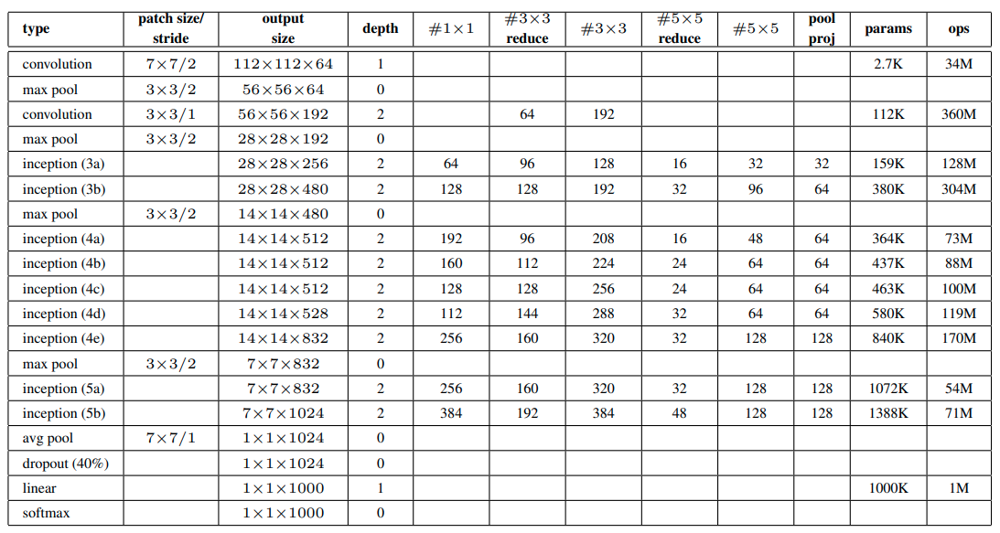

Cá nhân mình thấy GoogLeNet là một paper khó đọc. Khi viết ra bài này thì mình vẫn đang cảm thấy hơi lú về nội dung của nó 😀
Giới thiệu
Từ khi AlexNet được công bố vào năm 2012 và đặt nền tảng cho các mạng Deep CNN, GoogLeNet, hay Inception V1 (2014), là một trong những kiến trúc có cách thiết kế rất thú vị khi nó tận dụng hiệu quả các conv layer, đặt nền móng cho nhiều mô hình sau này.
- “Inception” có thể dịch là “sự khởi đầu”, nghe có vẻ rất hợp lý 😀.
Ngoài ra, ở trong bài viết về VGG, mình có đề cập đến vấn đề thiết kế kiến trúc mô hình theo hướng có sự lặp lại các khuôn mẫu. GoogLeNet cũng sẽ được thiết kế như vậy.
Lưu ý. Tên của mô hình này là GoogLeNet, không phải GoogleNet =)) Tác giả cho biết ý nghĩa của cái tên này là “This name is a homage to Yann LeCuns pioneering LeNet 5 network.”
GoogLeNet được xây dựng từ những mục tiêu của nghiên cứu như sau:
- Nâng cao khả năng tận dụng tài nguyên tính toán
- Cho phép tăng chiều rộng và chiều sâu của kiến trúc mô hình mà vẫn đảm bảo được độ phức tạp tính toán là ở mức chấp nhận được.
GoogLeNet thật sự đã đạt được những điều đó, và nó được xây dựng dựa trên nguyên lý Hebbian: “neurons that fire together, wire together”. Paper GoogLeNet đã đưa ra các nền tảng lý thuyết rất “căng thẳng” để cho thấy rằng mô hình CNN có thể hoạt động “đủ tốt”, điều mà ta chưa được biết đến ở trong các paper trước đó 😀
Ngoài ra, có một quan điểm khá thú vị khi mô tả về kiến trúc của GoogLeNet như sau: Khi xây dựng kiến trúc CNN, thay vì phải suy nghĩ xem trong các mạng CNN ta nên áp dụng filter với kích thước bao nhiêu, hãy áp dụng luôn nhiều filter với kích thước khác nhau và tổng hợp kết quả lại 😜
- Mình cũng có đồng tình với quan điểm này. Tuy nhiên, nguồn gốc đằng sau nó có vẻ không chỉ đơn giản là như vậy. Trong paper, các tác giả đã tiến hành phân tích và thử nghiệm nhiều lắm cho ra được cái kiến trúc của GoogLeNet.
Kết nối thưa và CNN
Đầu tiên, tại thời điểm trước khi Inception được công bố, chúng ta có thể cải thiện một mô hình DNN bằng những cách như sau:
- Tăng chiều sâu của mô hình (tức là số layer)
- Tăng chiều rộng (số channel trong mỗi layer)
Tuy nhiên, với hai cách trên thì sẽ có những vấn đề mà ta cần lưu tâm là hiện tượng overfitting và sự gia tăng độ phức tạp của mô hình.
Các tác giả có đề cập đến một hướng đi có thể giảm bớt hai vấn đề trên là sử dụng kiến trúc kết nối thưa (sparsely connected architectures). Ta có thể hiểu đơn giản như sau:
- Với hai fully connected layer liên tiếp nhau, mỗi neuron trong layer sau sẽ kết nối với tất cả các unit trong layer trước. Nếu như ta thay đổi đi một chút, mỗi neuron trong layer sau sẽ chỉ kết nối đến một vài unit trong layer trước, kiến trúc có được sẽ trở nên “thưa” hơn.
Kết nối thưa trong fully connected layer
- Đối với conv layer thì ta đã đạt được tính chất thưa như vậy. Ta biết rằng, với mỗi phần tử trên feature map của layer hiện tại thì ta tính nó dựa vào một vùng nhỏ trên feature map output của layer trước đó. Giả sử hai layer này đều chỉ có 1 channel thì ta có thể biểu diễn nó như hình bên dưới:
Kết nối thưa trong conv layer
Kiến trúc thưa được các tác giả mô tả là mô phỏng lại hệ thống sinh học (ví dụ như khi ta nhìn vào một đối tượng thì ta thường chỉ chú ý một số điểm trên đối tượng đó thôi, khó mà chú ý tất cả được).
Ngoài ra, có một nền tàng lý thuyết rất trâu bò về kiến trúc thưa của Arora như sau:
- If the probability distribution of the data-set is representable by a large, very sparse deep neural network, then the optimal network topology can be constructed layer by layer by analyzing the correlation statistics of the activations of the last layer and clustering neurons with highly correlated outputs.
Thật sự mình cũng chưa hiểu hết ý của câu trên… Nhưng đại ý của nó có vẻ là nếu ta biểu diễn được phân phối các điểm dữ liệu của một dataset bằng một kiến trúc DNN lớn và thưa thì từ đó ta có thể xây nên được một kiến trúc tối ưu (về cả độ chính xác và độ phức tạp), bằng cách xây từng layer một 😀
Tuy nhiên, với các tài nguyên phần cứng trong thời gian này thì rất khó để ta có thể tính toán trên các mạng DNN thưa. Do đó, các tác giả đi theo hướng tìm một mô hình là có tận dụng một số thông tin về tính chất thưa nhưng vẫn thực hiện tính toán trên các ma trận đầy đủ. Đấy chính là hướng sử dụng các phép toán convolution!.
- Cũng vì lý do này, ở phần kiến trúc của GoogLeNet thì ta sẽ thấy nó chỉ có duy nhất một fully connected layer để sinh ra output, còn lại chỉ toàn conv layer thôi 😗
Nói đến việc áp dụng các filter trong conv layer, các tác giả cho rằng:
- Mỗi phần tử trong feature map của một layer sẽ có mối tương quan với một vùng nào đó trên ảnh input (receptive field). Ta sẽ gom các phần tử cùng tương quan với một vùng vào cùng một cụm.
- Để ý rằng, trong những layer ở gần ảnh input thì ta sẽ có nhiều cụm và kích thước mỗi cụm là nhỏ. Càng đi qua các layer CNN thì số lượng cụm sẽ ít lại và kích thước cụm sẽ lan rộng ra. Tất nhiên là vẫn có thể có những cụm có kích thước nhỏ tại những layer đó. Do vậy, ta nên có các filter với kích thước lớn hơn để học các đặc trưng tại các cụm lớn, đồng thời cũng cần có filter kích thước nhỏ đối với các cụm nhỏ hơn.
Qua một loạt các thử nghiệm, các tác giả đã chọn 3 filter là $1 \times 1$, $3 \times 3$ và $5 \times 5$. Một khối chứa 3 filter trên được đặt tên là Inception module.
Bây giờ quay lại với lý thuyết của Arora, ở ý xây dựng mạng tối ưu qua từng layer một. GoogLeNet được tạo nên bằng đúng ý tưởng như vậy, ta nối Inception module - by - Inception module 😀
P/s: Các bạn có thể tìm đọc phần Motivation trong paper gốc và tự cảm nhận nó nhé.
Inception module
Inception module
Qua các mô tả ở phần trên, ta có thể liên tưởng đến kiến trúc của Inception module là một thứ gì đó giống với cái ở hình (a), với đủ 3 loại filter là $1 \times 1$, $3 \times 3$ và $5 \times 5$. Các tác giả dùng thêm cả một layer max pooling trong đó nữa, với lí do rất đơn giản là vì ở thời điểm đó thì max pooling thường mang lại hiệu quả tốt trong các kiến trúc mạng CNN =))
Truy nhiên, cách cài đặt như hình (a) sẽ dẫn đến số lượng tham số của mô hình là rất lớn. Thay vào đó, ta có thể tạo ra kiến trúc dạng “bottleneck” bằng cách sử dụng thêm các layer convolution $1 \times 1$ như hình (b), nhằm mục đích chính là giảm số channel. Số lượng phép tính lúc này sẽ được giảm một cách đáng kể.
Lưu ý rằng, ở cuối module ta có phép toán concatenate, tức là các feature-maps của toàn bộ layer convolution đều phải có cùng size (tức là width và height)
Kiến trúc GoogLeNet
GoogLeNet sử dụng tổng cộng 9 Inception module, gồm có 22 layer có trọng số (tính cả pooling là 27), được tóm tắt qua bảng sau:

Một điểm đặc biệt khi train GoogLeNet là các tác giả sử dụng các auxiliary classifiers (xem hình bên dưới). Các thành phần này sẽ khá giống như giống hệt với phần cuối của mô hình (bộ classifier). Như vậy, ta có thể xem GoogLeNet có 3 bộ classifier. Auxiliary classifiers được sử dụng với các ý nghĩa như sau:
- Hạn chế vanishing gradient
- Tăng regularization
Lưu ý:
- Loss khi huấn luyện sẽ cộng loss của cả ba lại với nhau.
- Khi test thì ta thường chỉ quan tâm đến bộ classifer cuối cùng. Một cách làm khác là ta xài cả 3, sau đó lấy kết quả trung bình.
{kind=link}
Cài đặt
Các bạn có thể tham khảo phần cài đặt GoogLeNet bằng Tensorflow và Pytorch tại repo sau. Trong cách cài đặt này, mình sẽ bỏ qua auxiliary classifiers.
Tài liệu tham khảo
- Paper GoogLeNet: https://arxiv.org/abs/1409.4842